Quick access
The coast at your fingertips. Use trains and ferries to keep the day efficient, then choose one walk only if trail conditions and energy are right.
Cinque Terre in One MinuteThe essential village, transport and pacing strategy. Where to StayThe chapter’s accommodation recommendations and base choices. Perfect Day OneArrival, first village walk and sunset. Perfect Day TwoVillages by train and ferry with one optional hike. The Five VillagesWhat each village does best and where to spend your time. Train, Ferry & ParkingThe practical transport strategy for the coast. MonterossoBeach, easy access and the classic trailhead. VernazzaThe signature harbor and strongest viewpoints. CornigliaA quieter elevated village with a different perspective. ManarolaIconic cliffside views and excellent late light. RiomaggioreSteep lanes, harbor color and evening atmosphere. Best Walks & HikesModerate options and realistic trail alternatives. Local CuisinePesto, anchovies, focaccia, seafood and Sciacchetrà. Restaurant RecommendationsCurated places for lunch, dinner and local specialties. Photography GuideSunrise, sunset and the strongest village viewpoints. Don’t MissThe essential experiences you would regret skipping. Before You Leave for Lake ComoParking, departure timing and the transfer to Varenna.
Cinque Terre chapter
Cinque Terre in One Minute
The essential village, transport and pacing strategy.
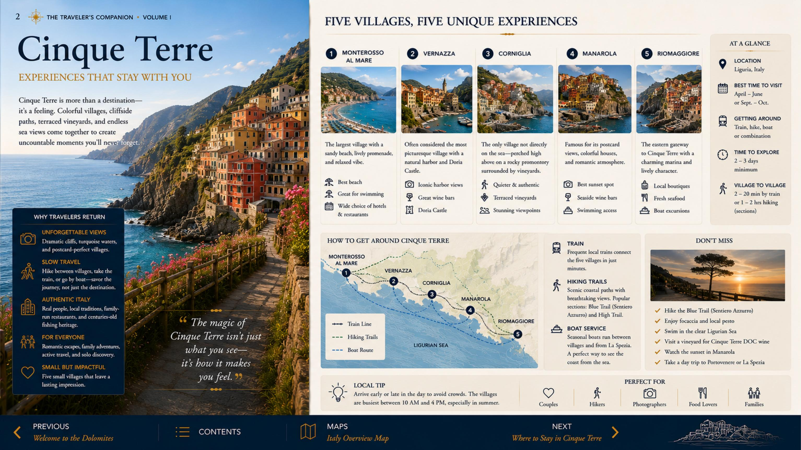
Cinque Terre in One Minute — page 2
Cinque Terre chapter
Where to Stay
The chapter’s accommodation recommendations and base choices.
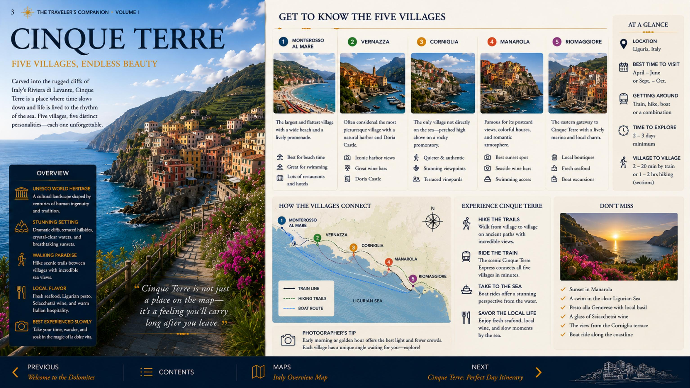
Where to Stay — page 3
Cinque Terre chapter
Perfect Day One
Arrival, first village walk and sunset.
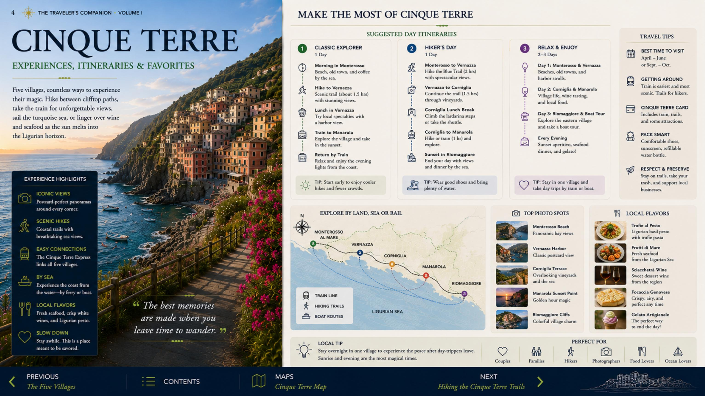
Perfect Day One — page 4
Cinque Terre chapter
Perfect Day Two
Villages by train and ferry with one optional hike.
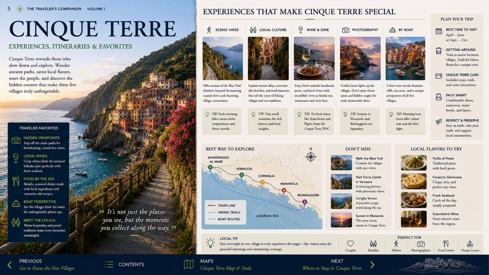
Perfect Day Two — page 5
Cinque Terre chapter
The Five Villages
What each village does best and where to spend your time.
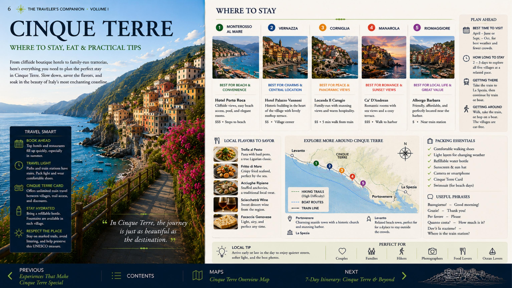
The Five Villages — page 6
Cinque Terre chapter
Train, Ferry & Parking
The practical transport strategy for the coast.
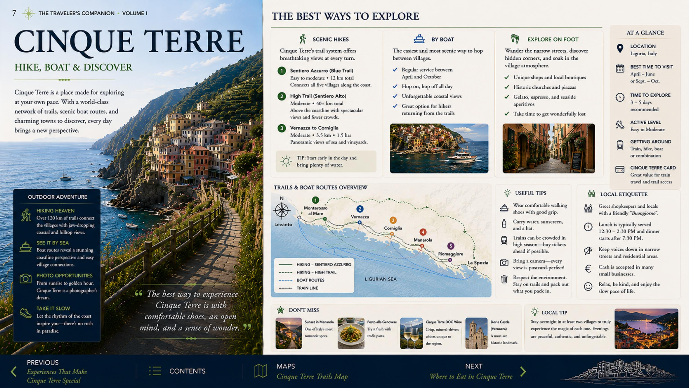
Train, Ferry & Parking — page 7
Cinque Terre chapter
Monterosso
Beach, easy access and the classic trailhead.
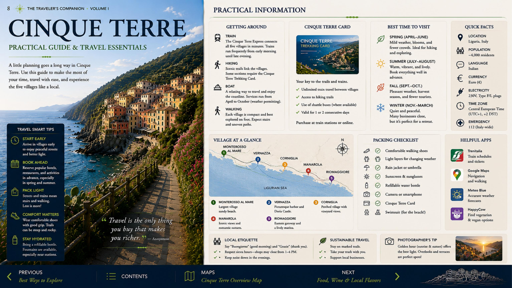
Monterosso — page 8
Cinque Terre chapter
Vernazza
The signature harbor and strongest viewpoints.
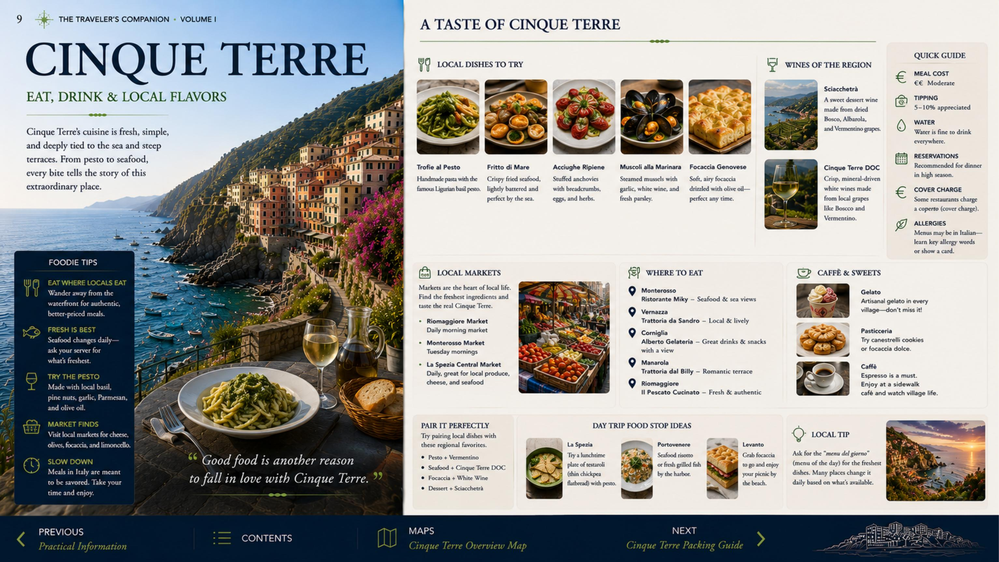
Vernazza — page 9
Cinque Terre chapter
Corniglia
A quieter elevated village with a different perspective.
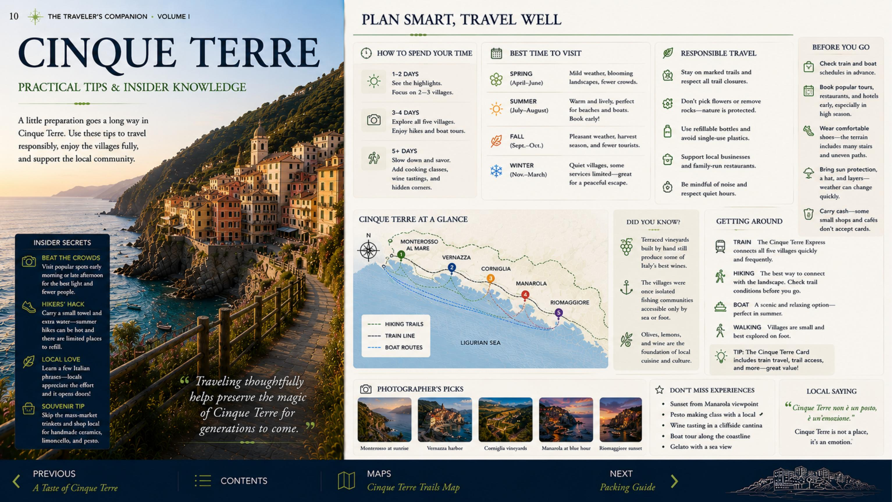
Corniglia — page 10
Cinque Terre chapter
Manarola
Iconic cliffside views and excellent late light.
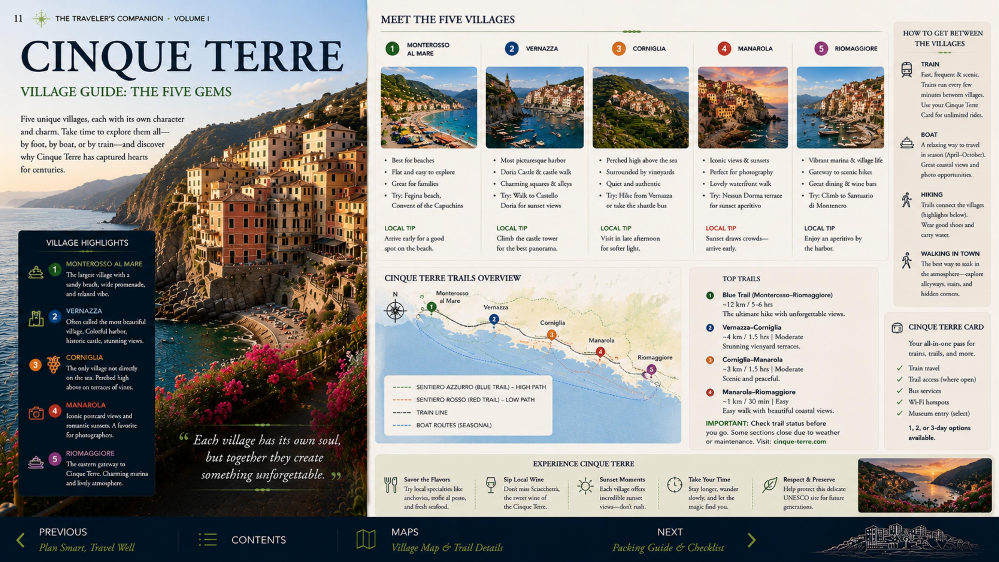
Manarola — page 11
Cinque Terre chapter
Riomaggiore
Steep lanes, harbor color and evening atmosphere.
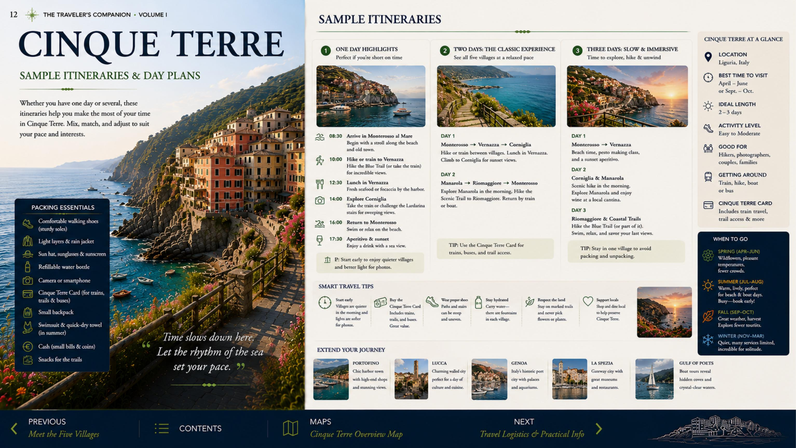
Riomaggiore — page 12
Cinque Terre chapter
Best Walks & Hikes
Moderate options and realistic trail alternatives.
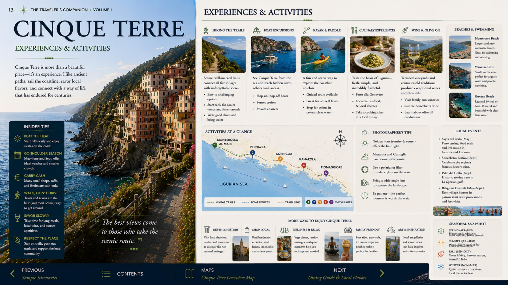
Best Walks & Hikes — page 13
Cinque Terre chapter
Local Cuisine
Pesto, anchovies, focaccia, seafood and Sciacchetrà.
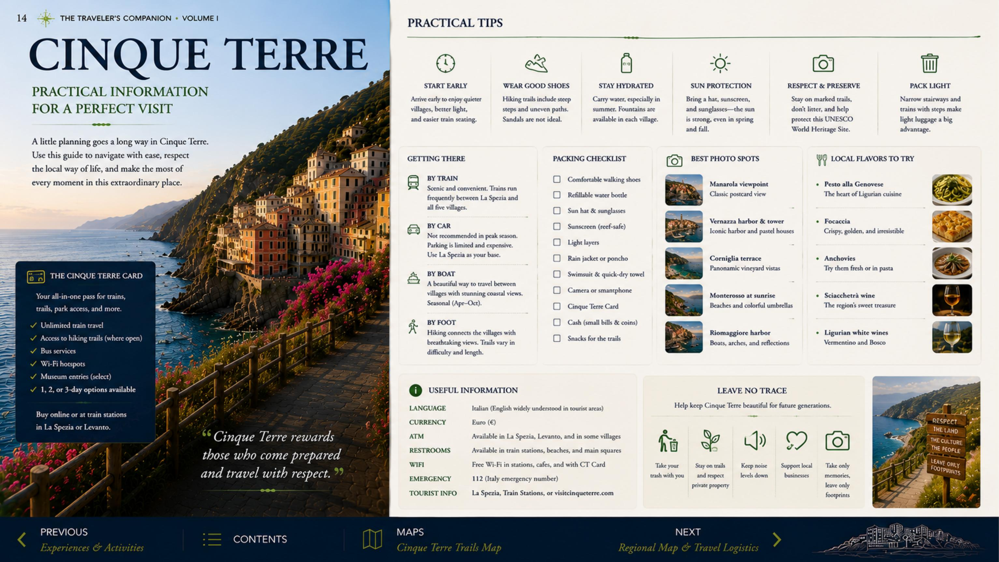
Local Cuisine — page 14
Cinque Terre chapter
Restaurant Recommendations
Curated places for lunch, dinner and local specialties.
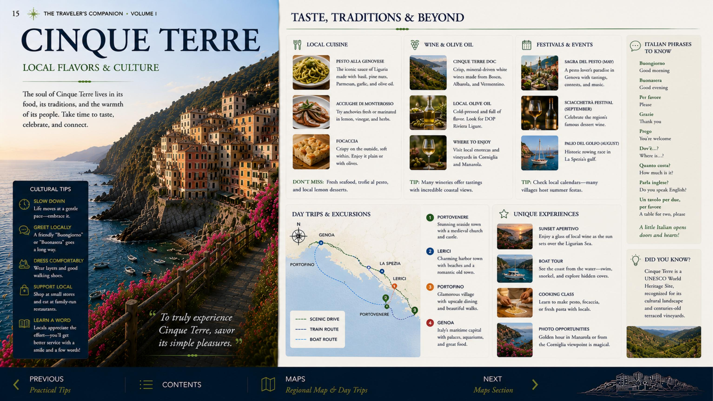
Restaurant Recommendations — page 15
Cinque Terre chapter
Photography Guide
Sunrise, sunset and the strongest village viewpoints.
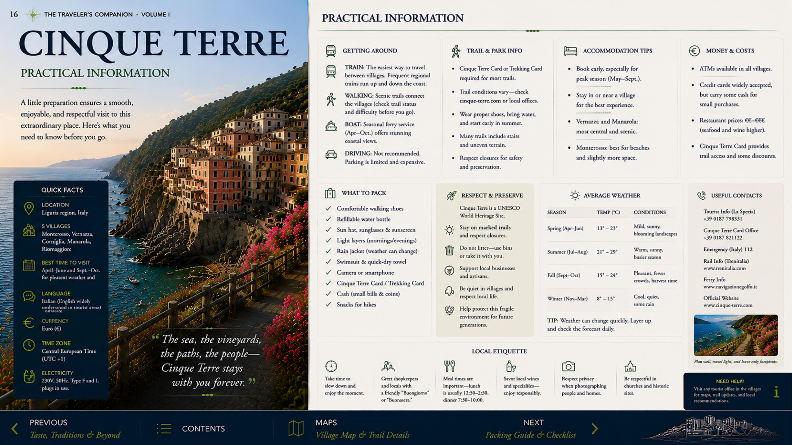
Photography Guide — page 16
Cinque Terre chapter
Don’t Miss
The essential experiences you would regret skipping.
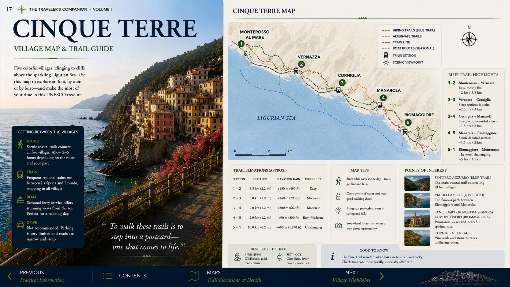
Don’t Miss — page 17
Cinque Terre chapter
Before You Leave for Lake Como
Parking, departure timing and the transfer to Varenna.
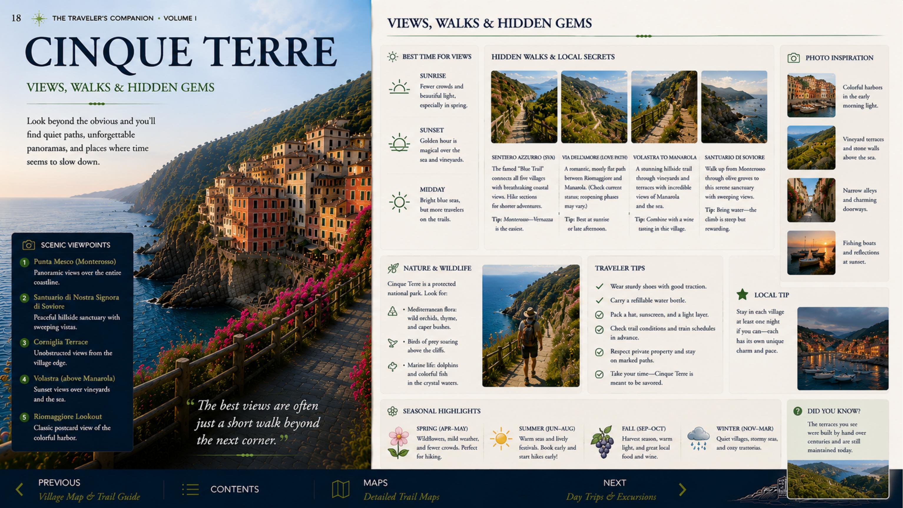
Before You Leave for Lake Como — page 18
Continue the journey
On to Lake Como